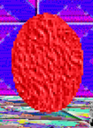

Red Paint is the Yellow Door Lock replacement in "Moldy's Basics In Being Le Modder"(/"MBIBLM").
Aliases
Red Paint, Paint, RP, Unnamed Yellow Door Lock replacement.
Appearance
It appears as a red drop of paint.
Gallery

Trivia
- Red Paint is most likely sticky due to the fact it can be used to stop the double doors from being opened.
- Red Paint was most likely used to paint the ceiling.
Return to Main Page